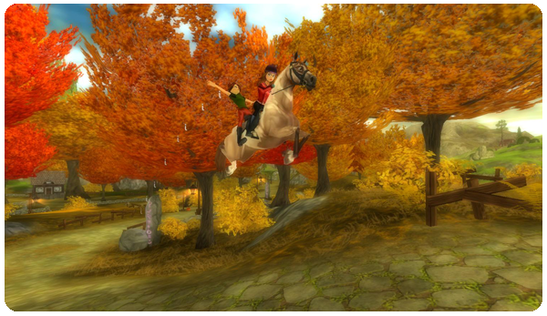

Hi all!
This is what's new in this week's update:
New race:
For all of you who have met Emma before, there is now a new challenging race! Emma is outside of the riding arena and she has been working on this new race in the Golden Leaf Forest. Ride to her and see if she needs any help.

New decoration shop:
Another decoration shop has been opened! The shop is located on the long deck between West Cape Fishing Village and the Golden Leaf Stable.